Whitney Lovelace & Grey Lovelace · Source Allies
Whitney Lovelace
Strategist
Problem Solver
Storyteller
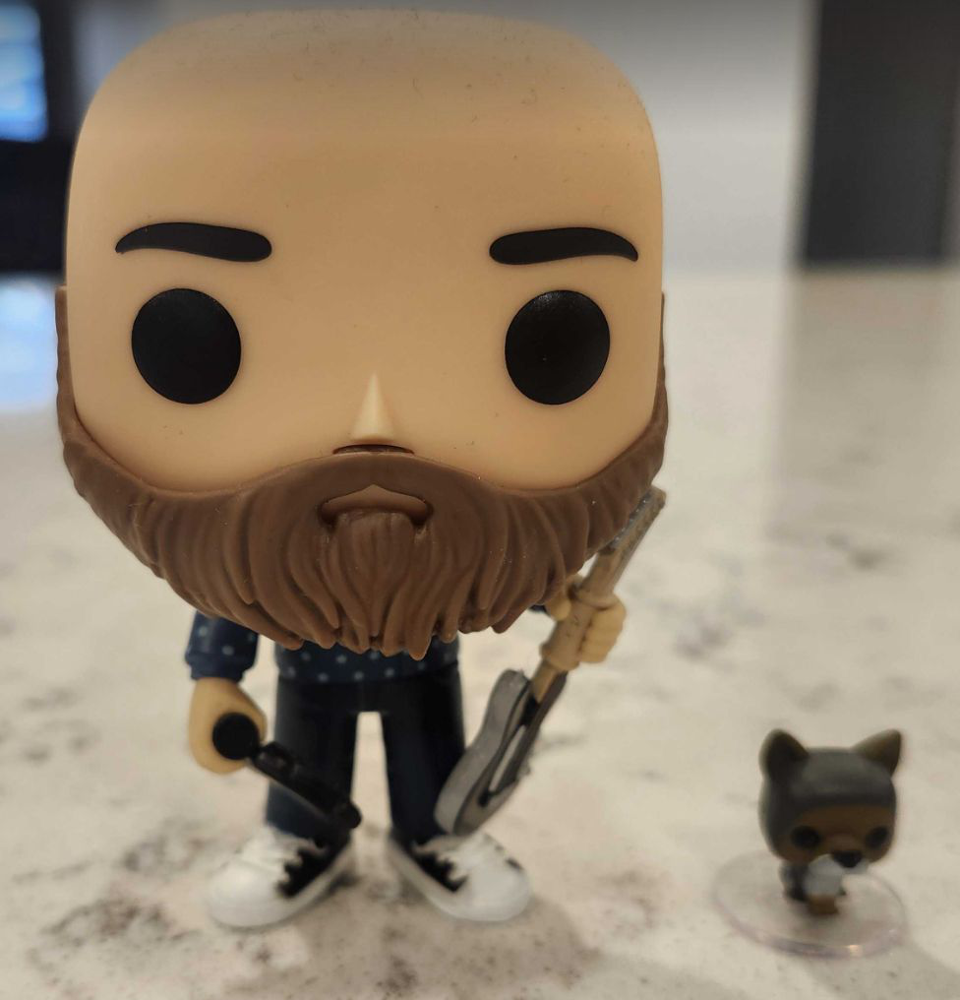
Grey Lovelace
Architect
AI Specialist
Coach
Raise your hand if:
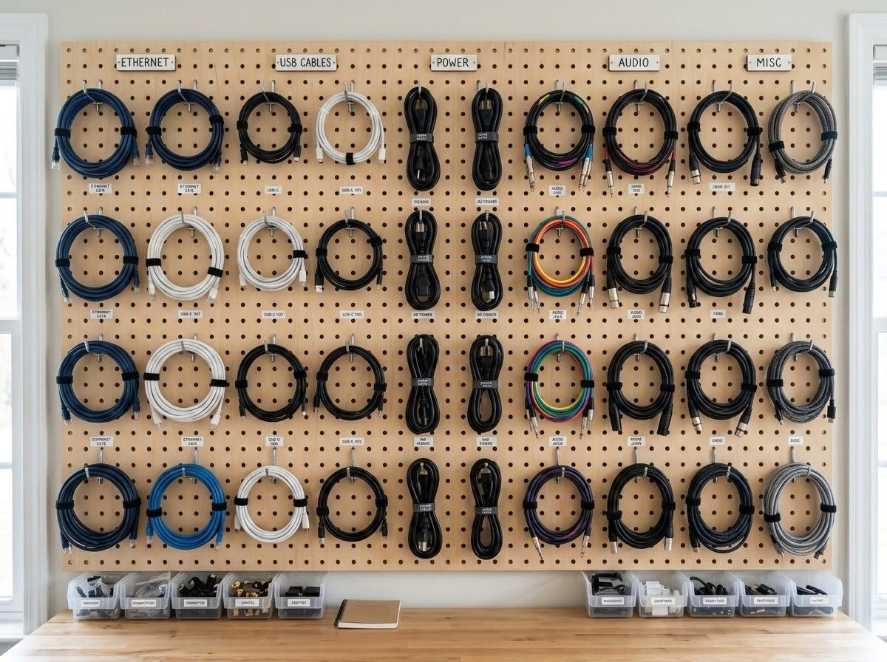
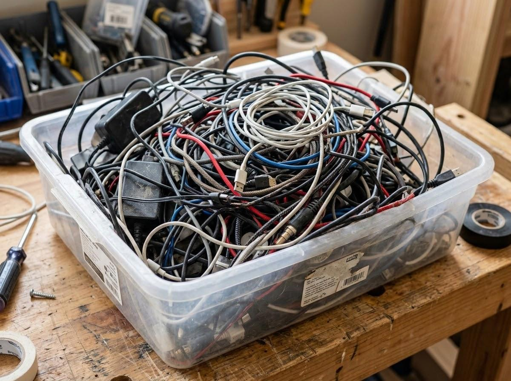
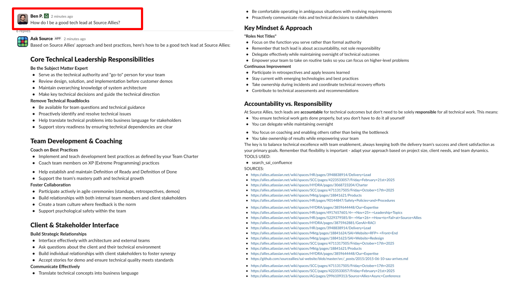
I would have written a shorter letter, but I did not have the time.
Blaise Pascal
The most successful businesses minimize the gap between the actions they take and what science knows to be true.
Miller’s Law
Humans can hold 5–9 “chunks” of information at once.
Expert Reversal Effect
Step-by-step procedures create extra cognitive load and reduce an experienced person’s ability to solve problems.
Spatial Split-Attention Effect
When docs are not stored where the work happens, your brain has to keep clearing and reloading working memory.
F-Shaped Reading Pattern
Eye-tracking shows people don’t read digital text line by line. They scan down the left side, reading short horizontal lines.
Part one
Why do we write documentation?
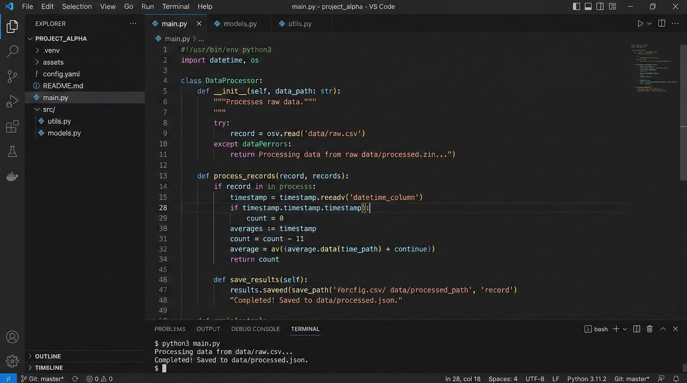
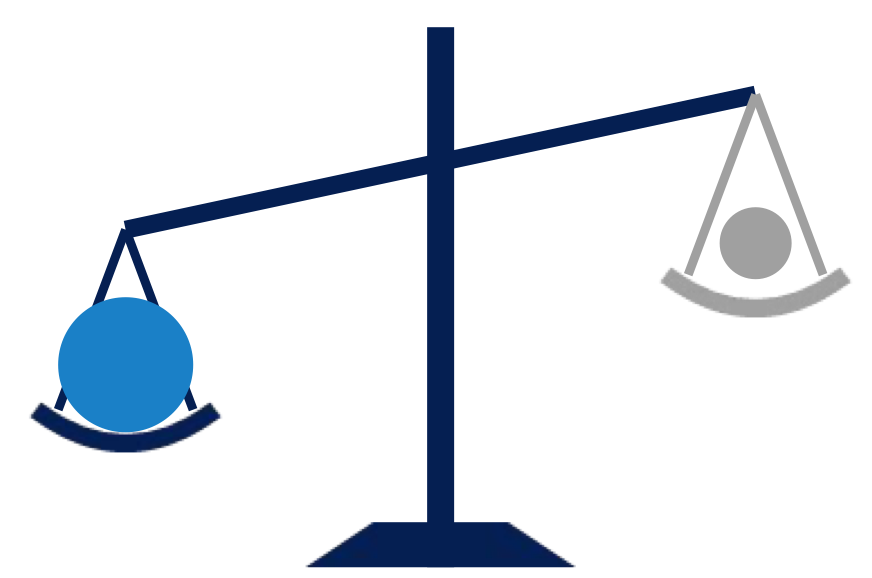
We value working software over comprehensive documentation.
Purpose
Audience
Location
Maintenance
Format
When you create documentation, you create technical debt.
Make sure the ROI is worth it!
1 of 5
Short-lived documentation is worth it when team alignment is needed.
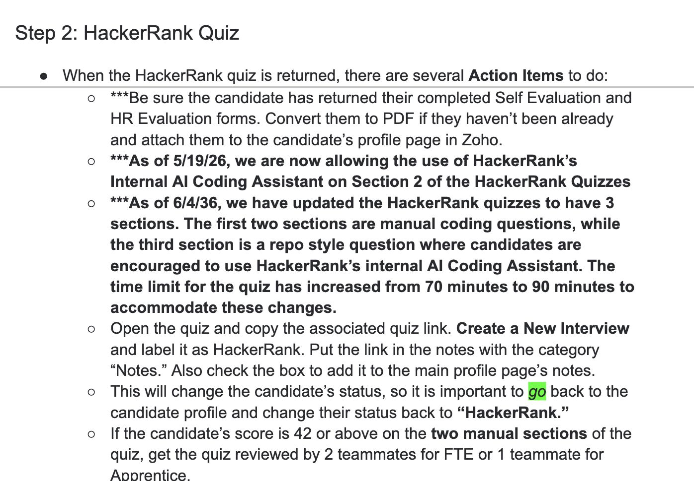
6 Pages!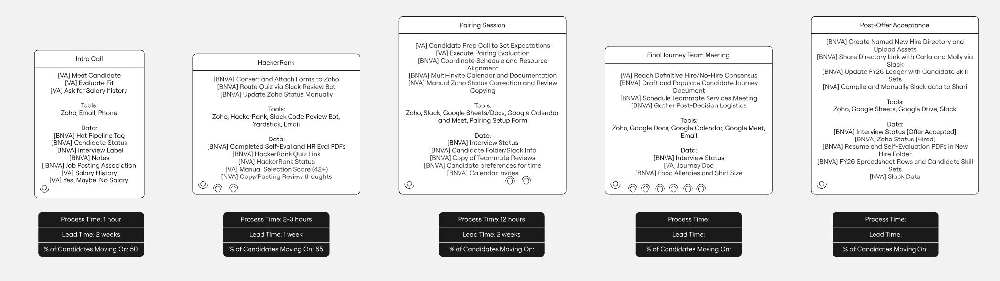
One step of the hiring process: six pages long.
The same process, as one diagram.
# Function to send an email. # Finds the email address of the user # and sends an email to them. def send_email_to_user(user: User): ...
# No operation if user email is null. # Sends all mail through Asia SMTP server # because of 3rd party user agreement. # Has to use user.alt_email instead of # user.email because of a data migration # issue in migration_034.sql. def send_email_to_user(user: User): ...
type User { ... # User type of "admin", "regular", # etc. Null if not set. type: String }
type User { ... # Null if user is temp user. type: UserType } enum UserType { # Can manage own and other accounts. ADMIN # Can only manage own account. REGULAR # Can only view public content. GUEST }
2 of 5
If you can’t answer these questions, you don’t need the documentation.
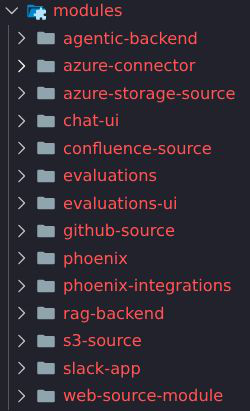
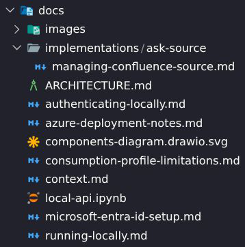
AI Accelerator Setup Guide
GenAI Accelerator History
3 of 5
If no one knows where a document can be found, does it really exist?
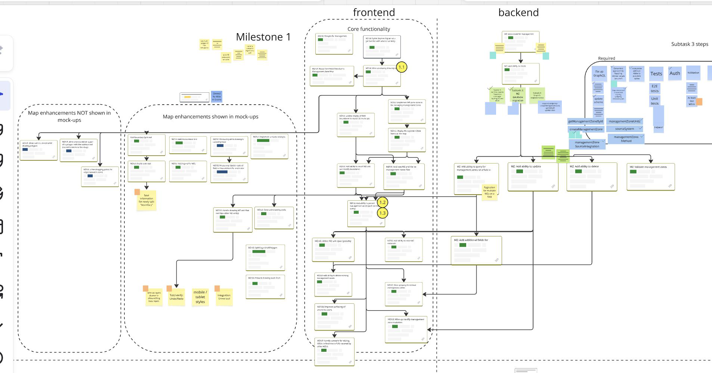
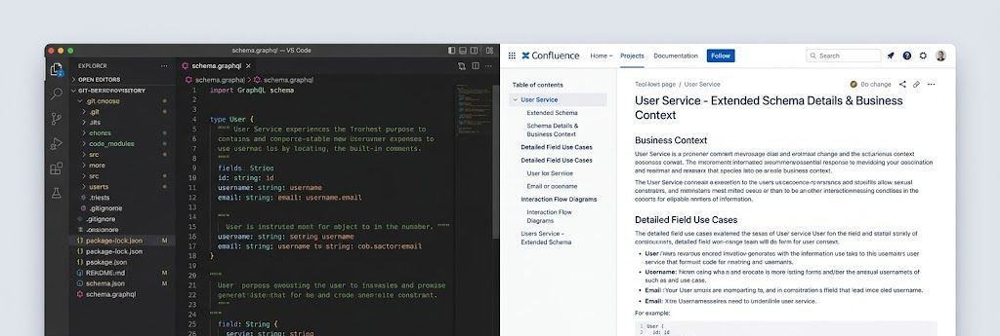
Schema change process
Confluence update process
Skips PR, code review, tech lead and management scrutiny. Immediate publication.
[ Edit page & publish ]
4 of 5
Working docs, notes, collaboration tools
Used after the project ends
Maintainability matters to leaders
Whenever I see someone taking care of documentation, I know they truly care about Source Allies.
Matt Vincent, Founder and Owner, Source Allies
it('the README is still accurate', () => { expect(README).toBeAccurate() })
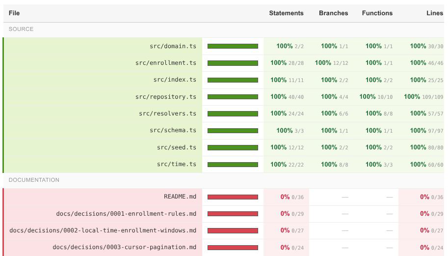
5 of 5
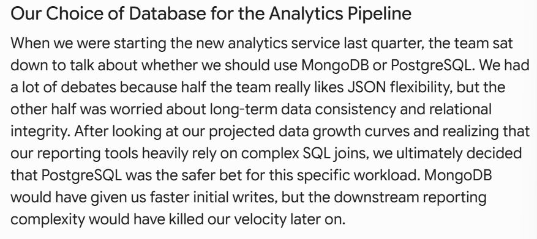
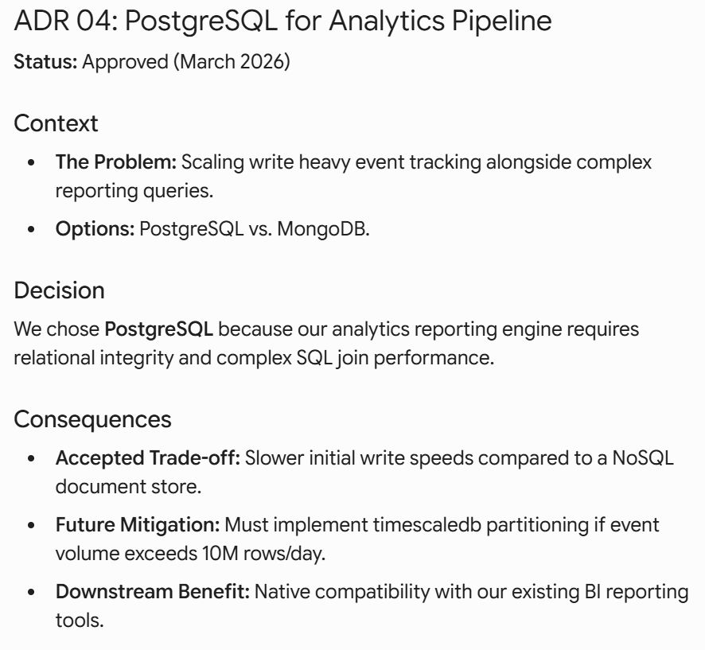
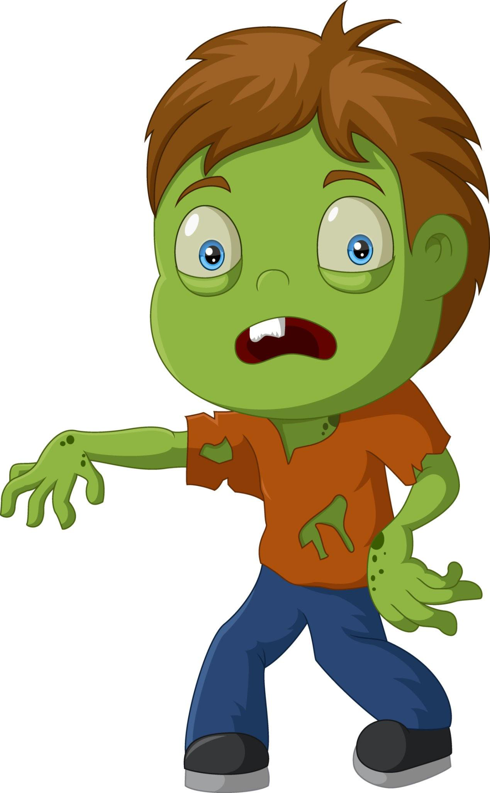
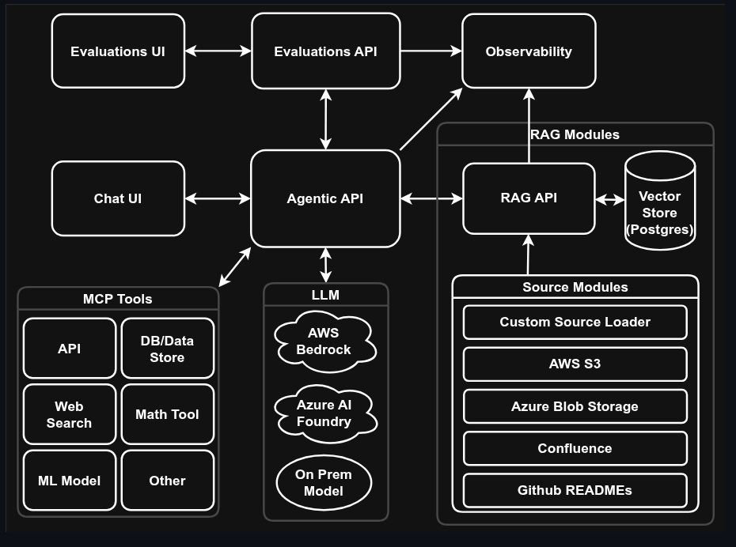
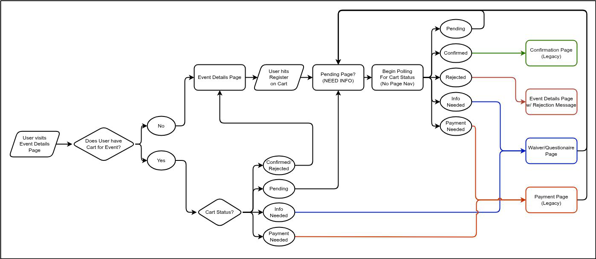
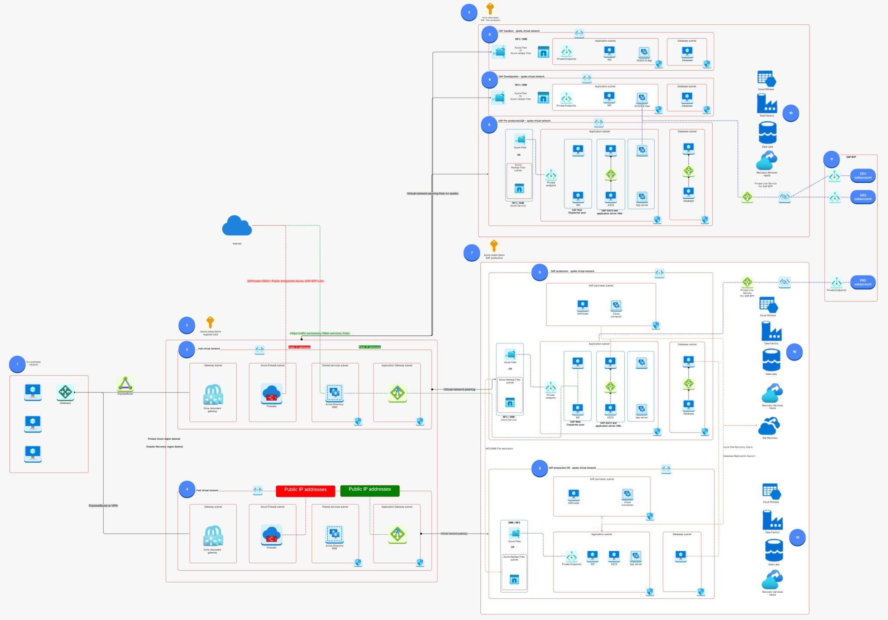
Part two